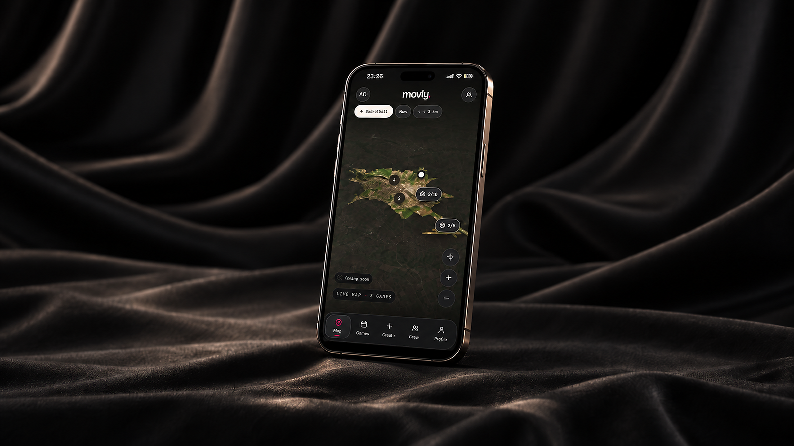

02 / Product design · Full-stack development
MOVLY
MOVLY is a fully planned startup prototype, developed down to the smallest product details. It is designed to become a mobile application and is now approaching completion.

Find your game.
Meet your city.
The idea came from a problem I faced often: I wanted to play, but had no team to join. MOVLY connects people in the same situation, helping them find players, nearby games and a place to play without relying on scattered group chats.
From prototype to app
I designed the product direction, user flows, interface, map experience and full-stack concept in detail. MOVLY uses a similar React, Vite, Node.js and Express foundation. The current website presents the prototype; the next step is completing it and turning it into an application for people who simply want to find a team and play.